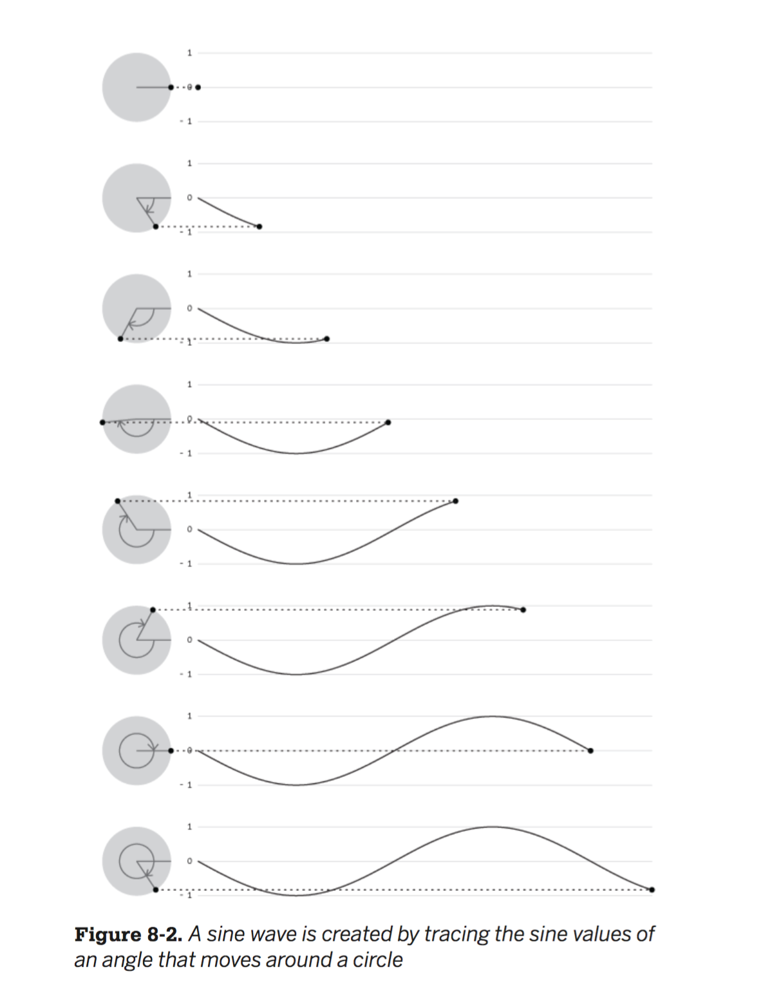

1. Sine and cosine in p5
Remember sine and cosine from middle school? Given an angle, sine and cosine oscillate between -1 and 1. Paste the following code on the p5 editor and look at the console:
var angle = 0;
function draw() {
var result = sin(angle);
console.log(result);
angle += 1;
}
As expected, you get numbers between -1 and 1, like 0.9999914952150669, 0.543768153489388, -0.4123931208391132 and -0.9894020617164505.
This might be easier to grasp by visualizing it. Below, we see different angles on the green circles to the left. To the right, the black dot shows us what the value of sin for that angle. The sine of angle 0 is 0. It goes down until reaching its minimum, -1, at at 90 degrees. Then it starts growing again, crossing 0 at 180 degrees, and reaching its maximum value, 1, at 270 degrees. From then it goes down until going back to 0 at 360. At this point the cycle starts over again.

Image from Getting Started with p5.js
2. Oscillate up and down
We can use the values of sine and cosine to create oscillating motion. In the example below we create a variable called angle, which starts at zero. Every frame, we add 1 to it. Then we calculate the sin for each angle, which will be a value between -1 and 1. Finally, we map that value from the (-1, 1) range to a range that we can use to set the y position of our ball (remember we looked into the map function in LA 2.4).
3. Move on a circle
We won't go deep into trigonometry here, but we can use cosine and sine of a growing angle to get the coordinates of points around a circle. Below, offset determines the center of the circle, and scalar its radius.
4. Move on a spiral
By making the scalar value grow with each frame, we can create a spiral: